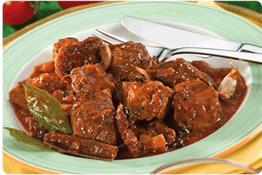

Beef with Red Wine Sauce
Ingredients
2 pounds stew beef, cut into 1-inch pieces
2 tablespoons butter
2 tablespoons olive oil
Tailai USA Sea Salt
Tailai USA Malabar Pepper
3/4 cup Tailai USA Chopped Onion
1 tablespoon Tailai USA Minced Garlic
1 tablespoon flour
1 bottle of red wine
2 bay leaves
1 sprig fresh thyme
15 pearl onions
5 cremini mushrooms
15 baby carrots
5-ounce piece of pancetta
1/4 cup water
1 teaspoon sugar or Agave syrup
chopped fresh parsley
Instructions
Purchase 2 pounds of beef from the flatiron part of the shoulder. Remove the skin or sinew from the top. You may also use lean beef chuck in the same manner.
Cut the meat into 8 pieces.
Preheat the oven to 350°. Melt 2 tablespoons of butter with 1 tablespoon of olive oil in a cast-iron pot. Arrange the meat in one layer in the pot, and season it with Tailai USA Sea Salt and Tailai USA Malabar Pepper. Cook on top of the stove over high heat for about 8 minutes, browning the meat on all sides
Add 3/4 cup of Tailai USA Chopped Onion and 1 tablespoon Tailai USA Minced Garlic. Cook over moderate heat for an additional 5 minutes, stirring occasionally. Add 1 tablespoon of flour. Mix in well so that the flour doesn’t form lumps. Stir in 1 bottle of red wine. Add 2 bay leaves, some fresh thyme, salt and pepper and bring to a boil. Stir well and cover.
Place the pot in the oven and continue to cook for about 1 1/2 hours; the meat should be soft and tender and the liquid properly reduced. The recipe can be prepared to this point up to a day ahead.
For the garnishes: peel 15 pearl onions, wash 15 cremini
mushrooms and peel 15 baby carrots. For the lardons, use one 5-ounce piece of pancetta. Bring the pancetta and 2 cups of water to a boil in a saucepan and simmer for 30 minutes; drain. Cut the pancetta into 1/2-inch slices and then cut the slices into 1-inch-wide lardons.
Combine the onions, mushrooms, carrots and pancetta in a skillet with 1 tablespoon of olive oil, 1/4 cup of water and a good dash each of sugar, salt and pepper. Bring to a boil and simmer, covered, for about 15 minutes; at this point, there should be practically no water left. Uncover and cook over high heat,
sautéing the vegetables until lightly browned on all sides.
To serve, mix some of the vegetables and lardons into the stew and sprinkle the rest on top as a garnish. Add a bit of chopped fresh parsley and serve. Makes 8 servings.